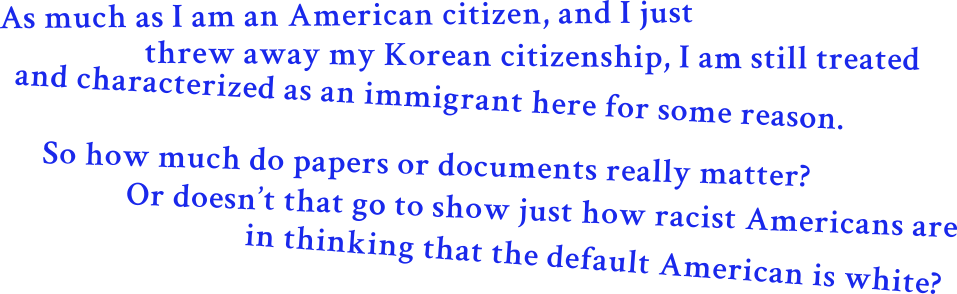

I feel as though part of the words “immigrant” and “foreign” have a lot to do with how white people got here in the first place. When “cultural exchange” first started happening, and European people would go off to other countries, there were all these books and texts being produced, like Madam Butterfly, which outrightly generalizes “The East” and fringes on sexism and imperialism as well. But just in general, I feel like for those Europeans, this created a superior stance of, “I’m an explorer, I’m discovering this not-as-advanced-as-me culture.”
When people look at me in a modern-day context, and in the community I grew up in—Clarksville, Maryland (which is like a white, suburban utopia)—I would feel like I was being looked at in an encyclopedic way, as in, “What are the different specs to consider when looking at this person? OK, so they have small eyes.” So then they’ll say something about my eyes, or my hair is black, or the color of my skin, etc. Based off of the physical characteristics I have, they then identify me as an “Asian person.” In that context, everything was a question or conversation about my proximity to whiteness in the way I looked, what I ate, how I acted, what I thought, and what I said. The conversations people had with me were tailored to that perceived identity. Which is like … being Asian is just one part of me!
Kimi Hanauer
K.H.
When you talk about producing books, and the production of so-called “knowledge,” this practice was actually one of the motivations for starting Press Press—thinking about how knowledge-making has this long history of just people taking authority over something.
Yeah, it’s like, “This is truth.”
For me, the form of a book and the English language really capture that history. Press Press was motivated by that idea, but using these forms and imbuing them with our own narratives and opening up spaces for others to represent themselves in whatever way they want to.
In that way you are broadening the scope of knowledge and history, etc. Like, say if you were to make a whole library of texts by white men (most libraries) but in a wide variety, you would be learning so many different ways that white men can be, and giving space and power to a specific demographic of people who already have space and power. Contrastly, having a wide mix of people from all demographics opens your eyes to perspectives that differ from your own. I picked up that poetry book Salt by Nayyirah Waheed at Press Press a while ago and discovered a perspective I would have never come across if it was not in this library. I would have never known to search for that author, or feel connected to her ideas of love, feminism, and race.
Well, yeah I think that’s another thing—there’s a difference between someone producing knowledge about someone else, and when someone can represent themselves, and that is a total break to that tradition.
I feel like a lot of times people are pushed to essentialize their identities in order to justify their existence, or justify being here, or even just fit into a conversation. And sometimes I feel like it can definitely be a violent situation, but I also wonder the ways that essentializing might be necessary, or if there are times that it can be productive? What are your feelings on this?
I feel like the way I have thought about it has been more through the word “assimilate.” I mostly think about when I was in high school and middle school, like when kids are picking up on social cues and norms—not the ones that you're directly told—but the ones that are within kids or the things we feel. Like, “Oh, that boy is bigger, he’s white, he has long, blond hair, so he must be a jock.” But the thing is, it was so funky for me growing up like that because even then I was like, “I’m putting you in a category, you're putting me in a category, and I don’t fit into the category you put on me, does that mean that you don’t fit in yours?” I had this one friend and he was on the soccer team. He’s white, and so before we were friends, he would bully me because he assumed, like, “Oh, you're Asian, so you’re a nerd. You’re in band, so you’re a music nerd. You can’t do sports, because you’re Asian. You’re good at math, because you’re Asian.” You know, nobody told me that because I’m Asian I have to act like I’m good at math, but it was just in the air as general knowledge that I picked up on. To a certain extent, as a kid, you just accept that, because you’re not equipped to combat racism and discrimination. I’m fucking terrible at math! But for some reason, when people would ask me to help them with their math homework, I’d feel like, ok, “I am Asian, so I have to be good at math. I have to be able to help this person.”
Screenprint, 2018, by Joseph Lee.
Back to my story with my friend: I would judge him as like, “He’s a white jock boy. He drinks alcohol with all his friends on the weekend. He doesn’t get good grades. He only cares about sports.” It wasn’t until we became friends that I realized he’s really good at math and I was good at a sport that he couldn’t do. And that he also really liked music and we became close. You know when you get to that point where you know so much more about someone beyond just their surface? We would have conversations about video games, or plants, or whatever, and it would never be framed like, “Oh, you're white so you think this way.”
You feel like you got past that?
Yeah, I think we got past that when we realized that our expectations of each other were wrong and that there were so many parts of us that were similar. Any instances that I was aware of his privilege over mine, we’d have a conversation about it and correct it. My friend would listen because, beyond our societal injustices, he really cared about me as a friend.
What do you think got you to that point?
I don’t want to say that being assimilated, having been in that state, helped me … I feel like when I was in that space of having to have these characteristics forced upon me, and having to play this role, I started to realize that these things are just not true even though that stereotype of me still exists.
I ask this question to people quite often: If we were both to be blind, how would our conversation be different? If we didn’t have those visual cues of race to go off of, how much more or less would we be learning about each other? In general, and for my friend, I try to push myself to be [as] present in a conversation as possible that is not tailored to race, because that is just one aspect of an individual. And I hope that if I represent myself completely as who I am, that click in people's minds might happen and they might be able to see me for me, rather than a stereotype.
What about when that click doesn’t happen?
I was in an Uber yesterday, and the guy was like, “So have you been hearing about what’s been happening in North Korea?” And I was like, “Um yeah, who hasn’t? What makes you want to bring that up?” And he says, “Well, I just assume, because you’re North Korean.” I said, “I think you should realize that regardless of if I am Korean or not, it doesn’t mean I would have an opinion or would know what’s up. And to assume my race solely on the two minutes I’ve been in this car by looking at my features is racist.” He just kept pestering me, saying stuff like, “Oh, well I have a Filipina girlfriend so I understand Asian issues” and also the infamous, “I can tell what kind of Asian you are” line. In that moment, it was just like, OK, this person is not going to get me, understand where I am coming from, or want to understand. This person just sees me as a character. Well, when I come across that, as much as it sucks to have to articulate to someone why they are being racist towards me, I feel like they lost the privilege to know who I really am.
You know, the Trump supporters who were carrying torches, stuff like that just make me feel like, as much as I am angry at those people, I also think it must suck to be those people because they will never get the privilege of what it feels like to be friends with someone and not have to associate all these things with them.
Like that their perspective of others, themselves, and the world around them is very limited and superficial?
Age-old ideas. And they do that to each other too.
They think they are clinging to power—but it’s a very limited way of existing. At Press Press, we’ve been thinking a lot about the word “immigrant” and all of the associations that come along with it. As someone who was born here, what makes you identify in that way?
I was born in Queens and my mom took me to Korea to do kindergarten. So I lived in Korea for two years. When I was there, I was often called 외계인 “alien” by the other children because although I look Korean, I spoke English. So that was really confusing for them. When I look back to that time, I still feel the same way. Even to this day when I go to Korea, I realize how I get treated like a foreigner because I look “American.” But in America, I’m also a foreigner because of the way I look. I’m Korean-American, but for some reason, I’m treated like an alien in both places. I feel like I have to prove my existence for simply living somewhere. And even those terms make me question, why do the words “foreigner” and “immigrant” have so many negative stigmas attached to them?
I think a lot of it goes back to nationalism and the idea that you can only be categorized as one thing or another.
In high school one of the things that happened to me was that I got a draft card from the South Korean Army. Essentially what happened was, I would have had to go to the army and not go to college. I ended up having to cancel my Korean citizenship, which was kind of surreal to me. I had to go to the Korean embassy and hand those papers in, and during that whole waiting time, I sat there and was like, “I am now only an American citizen. Am I not Korean anymore? What is it that actually makes me Korean? Is it my blood? Is it just this paperwork? Is it the way I look?” And I get chills just thinking about it. It’s just so weird. Because as much as I am an American citizen, and I just threw away my Korean citizenship, I am still treated and characterized as an immigrant here for some reason. So how much do papers or documents really matter? Or doesn’t that go to show just how racist Americans are in thinking that the default American is white?
That flows into what defines someone as an “immigrant.” It is not just the paperwork, but how we are racialized in the context of the United States.
Even if I showed someone my passport or documents of citizenship, it does not change the fact that I am still treated and seen as an immigrant, and thus someone that does not belong in America, simply because I am not white.
And yeah, how this society is structured, who is valued here, and the image of what it means to be an American can often be translated to: To be American is to be white.
I just feel like an immigrant in our practices. We have this phrase we came up with called the “lunch box moment” which is when you bring your lunchbox to school—
I had that too! You bring it out and everyone is like, “What is this?”
Yeah, and as a kid, you’re not equipped to be like, “This is my fucking food!” You’re more just like, “Oh, wait, you're right, it's not a peanut butter and jelly sandwich.” A poet named Namkyu Oh said it really well. He wrote a letter to his little cousins and said, “I want you to know that life isn’t that easy, especially as who you are, your middle school crush will look at you the same way that they look at your food, foreign, not normal, weird.”
Yeah, this makes me think of that melting pot metaphor and how much it preaches assimilation, assimilation into whiteness by people who look white. It’s essentially just the process of white supremacy, and is another way of excluding people of color.
I was just talking to a friend who is biracial about how when we are in an Asian country, we get treated like we do not belong. I’m Korean-American, I look Korean. But for my friend, even in her own family, people will look at her weird. That got us to talk about how we are all mixed anyways, but we still cling on to those categories.
Even though they aren’t real, they are still really functioning and define how we operate in the world, the conditions we live in. But I think there is potentially strength, or maybe it is a type of privilege, in the fluidity of not fitting into a category?
I am assimilated in so many ways. I can’t let go of that. For example, [with] 0Zone, our second show was themed “Alien.” There are so many definitions to that word. But it was about reclaiming that word and using it positively, transcending the oppression of that word and claiming it as our own.
That is beautiful.
Like, why do we have to resist all the time, why can’t we just be ourselves?
I think part of the problem is that we are always existing in relation to whiteness as a standard, and so the only people who can really embrace the idea of “individuality” are white people.
I get so tired of all that and want to let it all go sometimes. But the reason I love the collective work that we are doing is because if I don’t fix this, who is going to? As much as it’s so tiring and I wish our society could be free from injustice, I am thinking about a group of people who have a similar experiences to me and I have to take the responsibility to resist. If I don’t, it’s still going to exist and I’m still going to be living in it. I may rest for two days, but racism exists everyday and is hurting people everyday. I think one of the issues for the Asian Americans and Pacific Islanders (AAPI) community is that we don’t think we have issues. It wasn’t until I found a creative community in Baltimore that I met AAPI who really question the same things that I do.
Why do you think that happens?
I think it happens because we live in a society that generates whiteness, and assimilation is what has to be done to survive. Like learning the language, wearing certain clothes, having a certain haircut with certain mannerisms, being interested in a specific set of hobbies and interests because that’s what the American society rewards.
That’s how oppression works, it’s not just that one person oppresses another, it's that we all embody it in all of these different ways that we might not even be aware of.

What does sanctuary mean to you? Is this something that exists in your life?
I like this idea of a toolkit for sanctuary-building that you brought up in the framework for this series of conversations. I definitely feel like, as much as sanctuary can be physical space, if you don’t feel a sense of peace internally, then it won’t matter what space you’re in. The term sanctuary has a deep connection to my life because I’m a pastor's kid. I realized recently that it was never about the space. Going back to what you’re saying about a toolkit, to me, it infers finding a way of making a sanctuary within yourself instead of just within a space. I feel the most safe or joyful when I am having a conversation like this one—feeling the empathy between us, of me trying to understand what you are saying and then feeling like you are listening to what I am saying, trying to understand me. This feels like a sanctuary is developing between us. This is a place where Kimi and I are talking with each other, learning about each other, regardless of our physical features. Those little moments, when I feel like I can connect with someone, that’s what’s up.
I feel like our biggest problems come from what we assume everyone knows or agrees on. Or even within my Asian-American community, there is so much anti-Blackness. I feel like in order to work through that, we need to acknowledge that those issues exist, and then make the steps to unravel it.
And you feel like part of the way to do this is through conversations?
Trying to work as individuals breaking down white supremacy, a lot of that has to do with individual connections, conversations, and relationships. That’s also how I feel about gay conversion. My family assumes that all gay people burn in hell. And so I can never come out to them because it hurts me that they will think I deserve to be in hell, that they will see me in hell. That manifests in society in so many ways—if you're not “normal” you are lesser and you don’t belong.
Can you tell me more about your work with 0Zone? I understand a lot of that work as the building of a sanctuary space, is that how you think about it too? What motivated you to start this collective?
I think it goes back to when we were thinking about the name of our collective. 0Zone phonetically translates back to 공존 in Korean, which translates literally to “coexistence.” We were trying to recognize and acknowledge that we are all Korean and we are a collective. It wasn’t on purpose, it just happened. How do we let go of only doing things for Korean people? How do we get people to recognize and be a part of this message we are trying to send? When we first started, it wasn’t really all about ourselves, it was focused on the people who were performing. And people didn’t really even know we were Korean. And I think in the beginning that’s what we wanted, to not center ourselves. It just became more about like, “OK, I have a specific lens that I see the world through, and how can I use that as a tool and open it up to be useful to others as well to tell their story? How can I create a sanctuary where other people can come in and make it their own?” It's not like we found a place and filled it with our furniture and invited people to sit down in it. We rented a space, and you can come in and fill it with whatever you want and we will support that process.
How did you lead that initiative?
We fought a lot. I mean we would sit here at Press Press and argue about stuff like, “Do we have too many Asian people on this show? How are we reaching people in the submission call? Are we taking too much power for ourselves as curators? How can we be a platform that celebrates the artists and doesn’t take advantage of them?” Stuff like that. We really had to sit down and think about it. By going through that process and making these decisions, we were learning what we should all be learning—how to work together for the benefit of someone else, even if we don’t know how to at first.
It sounds like even just admitting that you don’t always know how is a big part of that process.
Yeah. We were asking so many different people for help and resources. And that was a way of learning and challenging ourselves. I guess, moving forward, we are thinking more about other people. How do you make things not easy? That’s what I really liked about what you said before—how do you complicate things? Because by complicating it you are delving into what makes an issue an issue, and addressing it.
To Grow, Ink and color pencil, 11" x 14", 2018, by Joseph Lee.
And how do you make thinking about other people as an integrated part of who you are? Because it is part of who we are. We need other people to exist in every capacity. But how do we change our thinking so we are consciously aware that other people are part of who we are?
My grandpa, [on a] very surface level, knows the collective work I’m doing. But he will tell me stuff like, “You can’t hate white people.” And I’m like, “Ugh, Grandpa ... but I do!” And he’s like, “You need to involve them.” He was involved in community work in the United States too, kind of in a similar line of work to me. He says, “I get why you feel how you feel, but you cannot hate white people because you always have to be thinking about the good of everybody.” I had an epiphany from that conversation that what I hated was the injustice that generated white people, not the individuals. As much as I am part of a resistance, part of that resistance is also white people changing their ideas and expanding their ways of operating in the world.
As much as it is completely valid to be angry about these circumstances, in the end, I have to think about white people too. I think about things like how I articulate my experience to them, so that they might also change, so they might also be able to break out of the teachings and beliefs of white supremacy. To end on a good note, we all have to do the work, we all have to break out of white supremacy.